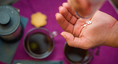

Подсластители под угрозой

Как заявлено в статье для журнала Neurology, группа бразильских специалистов в течение 8 лет изучала сведения о питании и здоровье 12 тыс. человек, средний возраст которых составлял 50 лет. Добровольцы регулярно сообщали, сколько продуктов и напитков с подсластителями они употребляют.
Как проводилось исследованиеЧтобы оценить состояние нервной системы, испытуемым давали интеллектуальные упражнения на память, владение речью, концентрацию и быстроту мыслительных процессов.
Ученые установили, что регулярное включение искусственных подсластителей в рацион существенно отражается на работе мозга. В частности, интеллектуальные способности снижаются быстрее на 60%.
Результаты
К провоцирующим факторам отнесли злоупотребление популярными сахарозаменителями, в том числе:
Исключением из правил стала только тагатоза — ее связь с ухудшением когнитивных функций обнаружена не была. Этот редкий натуральный подсластитель содержится в ягодах, фруктах, некоторых овощах, какао-бобах, а также в молочных продуктах.
| Происхождение | Калорийность | Гликемический индекс | Особенности |
|---|---|---|---|
| натуральное | 1,5 ккал/г | 3 | Не провоцирует кариес, обладает пробиотическими свойствами |
Ранее профессор выделил продукты, которые укрепляют иммунитет лучше добавок.